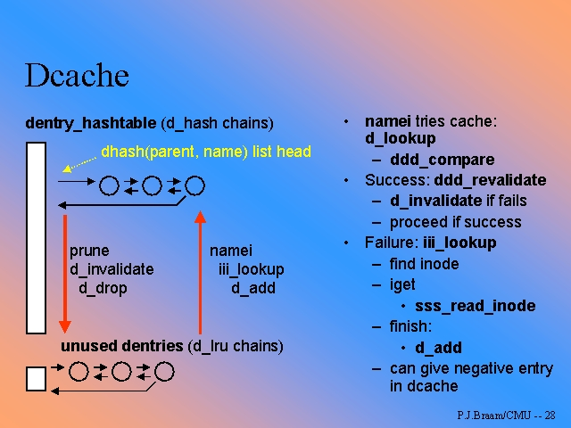
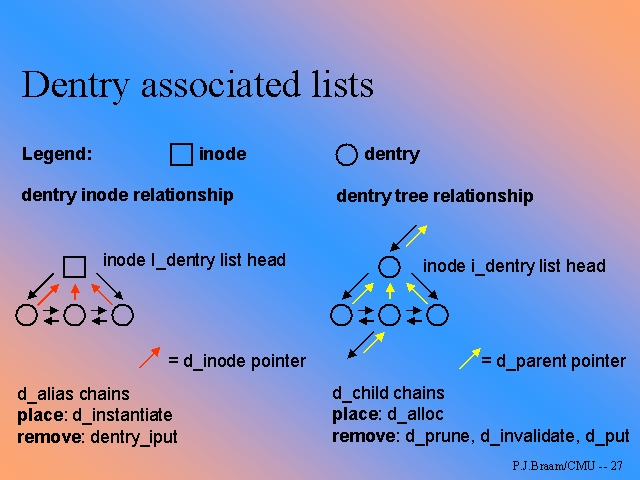
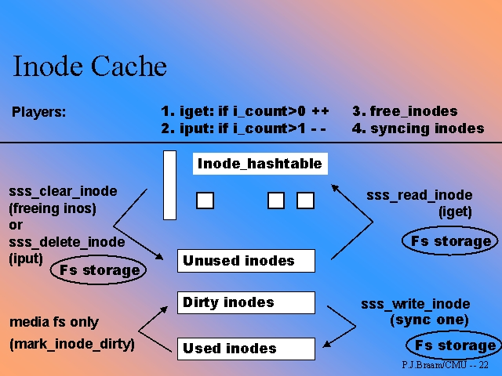

Hasta ahora hemos visto el VFS desde el punto de vista del programador de sistemas de ficheros, describiendo las operaciones, y cómo operar con las estructuras del VFS. Deliberadamente hemos dejado a un lado el tratamiento interno de los datos. El lector se puede preguntar con razón si es necesario acceder al disco cada vez que un inodo es modificado, o si para abrir un fichero es necesario recorrerse todo el arbol de directorios siguiendo el path. La respuesta es simple: NO. Linux implementa el denominado Virtual File System Cache, ( VFS Caché ) para acelerar substancialmente el sistema de ficheros
|
Veamos por ejemplo la llamada al sistema open(2). El argumento "filename" es utilizado por el VFS para buscar en una estructura denominada Directory Entry Caché ( dentry caché o dcache ), donde se almacenan referencias a los directorios utilizados
Normalmente, una entrada del dcache contendrá un puntero a un inodo. Las dcaché solo residen en memoria, mientras que los inodos si tienen existencia en el disco físico. Puesto que los dcache no tienen existencia real, es preciso crearlos "bajo demanda". La inode_operation lookup() se encarga de ello. La primera vez que el VFS accede a un inodo que corresponde a un directorio, lo hace a través de ésta función. Posteriores búsquedas sobre este inodo, se realizan a través de la entrada de caché que hemos creado. Recordemos que si el usuario no tiene definida la función de lookup() el VFS tiene una por defecto
Del mismo modo que existe una entrada de cachés para directorios, tenemos estructuras de caché para inodos. Por último, el VFS implementa un buffer caché que controla los accesos a disco, realizando operaciones de lectura en avance (look-ahead)
|
Una vez que el fichero se cierra, las correspondientes entradas de caché son marcadas como "libres". Posteriormente veremos que el VFS reutiliza las entradas del dcache, realizando procesos de asignación de memoria solo cuando no tiene entradas libres. Esto se realiza mediante listas encadenadas de dentry's libres. Puesto que esta operación es mucho más rápida que la de asignación/liberación de memoria, el rendimiento del caché es mucho mayor
No solo el VFS puede manejar el caché: el programador tiene la posibilidad de asignar, liberar, eliminar o crear entradas. Algunos sistemas de ficheros, especialmente los de red ( CODA, SMB, NFS, etc ) necesitan marcar entradas de caché como inválidas, cambiar la asignación de inodos, etc. Las estructuras del VFS permiten estas operaciones
|
Procedamos ahora a ver cómo está estructurado el VFS caché, y las operaciones que se pueden realizar
Si recordamos las entregas anteriores dedicadas al VFS, podemos ver que en la definición de la estructura superblock había una entrada denominada dentry_operations. El listado 1 describe dicha estructura
struct dentry_operations {
int (*d_revalidate)(struct dentry *);
int (*d_hash) (struct dentry *, struct qstr *);
int (*d_compare) (struct dentry *, struct qstr *, struct qstr *);
void (*d_delete)(struct dentry *);
void (*d_release)(struct dentry *);
void (*d_iput)(struct dentry *, struct inode *);
};
|
| Listado 1: Estructura dentry_operations |
|---|
Recordemos que el usuario puede dejar estas funciones definidas como
null y que en este caso el VFS utilizará las funciones predefinidas.
El VFS utiliza estas funciones para el manejo del cache. Es preciso hacer
constar que puesto que el numero de entradas de caché puede llegar a ser
grande, el núcleo utiliza un sistema de tablas de hashing para acelerar
el acceso a la entrada de caché buscada. Por supuesto, el usuario puede
definir también sus propias funciones de hashing, aunque no se suele hacer
La figura 1 ilustra la organización de las listas y tablas de hash para las
estructuras dentry
|  |
| Figura 1: Estructuras y tablas de hashing del dentry cache |
|---|
Los elementos de esta estructura son:
Pero ¿realmente, de qué consta una directory inode entry?. Básicamente de:
struct dentry {
int d_count;
unsigned int d_flags;
struct inode * d_inode; /* Where the name belongs to - NULL is negative */
struct dentry * d_parent; /* parent directory */
struct dentry * d_mounts; /* mount information */
struct dentry * d_covers;
struct list_head d_hash; /* lookup hash list */
struct list_head d_lru; /* d_count = 0 LRU list */
struct list_head d_child; /* child of parent list */
struct list_head d_subdirs; /* our children */
struct list_head d_alias; /* inode alias list */
struct qstr d_name;
unsigned long d_time; /* used by d_revalidate */
struct dentry_operations *d_op;
struct super_block * d_sb; /* The root of the dentry tree */
unsigned long d_reftime; /* last time referenced */
void * d_fsdata; /* fs-specific data */
unsigned char d_iname[DNAME_INLINE_LEN]; /* small names */
};
|
| Listado 2: definición de la estructura dentry |
|---|
|
Vemos que las dentry's se organizan en forma de estructura de árbol, que corresponde además con aquellas ramas del arbol de directorios que están siendo utilizadas en un momento dado. De aquí se explica fácilemente el hecho de que la primera consulta a un directorio es siempre mucho más lenta que las sucesivas lecturas: el sistema crea al vuelo las sucesivas dentry's en el caché de manera que un ulterior acceso a dicho directorio es consultado directamente en este. la figura 2 ilustra las relaciones entre estructuras
|  |
| Figura 2: Asociación de estructuras dentry |
|---|
Los campos d_time y d_reftime se utilizan en las operaciones de revalidación del inodo, y la liberación/reasignación de la dentry para nuevos usos.
Llegados a este punto, el lector se preguntará ¿Cómo puedo yo desde un sistema de ficheros concreto, manejar el dcache?. El VFS provee las siguientes funciones:
|
El programador puede utilizar estas operaciones cuando desea modificar los contenidos del cache. Del mismo modo se puede definir dentry_operations específicas para un sistema de ficheros dados. Los usos más habituales son:
/*
* Compare two msdos names. If either of the names are invalid,
* we fall back to doing the standard name comparison.
*/
static int msdos_cmp(struct dentry *dentry, struct qstr *a, struct qstr *b)
{
int error;
struct fat_mount_options *options = &(MSDOS_SB(dentry->d_sb)->options);
char a_msdos_name[MSDOS_NAME], b_msdos_name[MSDOS_NAME];
error = msdos_format_name(options->name_check, a->name, a->len,
a_msdos_name, options->dotsOK);
if (error) goto old_compare;
error = msdos_format_name(options->name_check, b->name, b->len,
b_msdos_name, options->dotsOK);
if (error) goto old_compare;
error = memcmp(a_msdos_name, b_msdos_name, MSDOS_NAME);
out:
return error;
old_compare:
error = 1;
if (a->len == b->len) error = memcmp(a->name, b->name, a->len);
goto out;
}
static struct dentry_operations msdos_dentry_operations = {
NULL, /* d_revalidate */
msdos_hash,
msdos_cmp,
NULL, /* d_delete */
NULL,
NULL
};
|
| Listado 3: Implementación de d_compare en el msdosfs |
|---|
|
Aparte del directory entry caché, existe un inode caché, donde
se guardan en memoria las referncias a inodos. Recordemos que los inodos en
memoria tienen una correspondencia física con los inodos en el disco, y que son
volcados periodicamente a éste. La estructura es mucho más simple, consistiendo
en listas de inodos usados, libres y "sucios" ( pendientes de actualizar )
Del mismo modo existe una tabla hash para acceder rápidamente a los inodos,
aunque lo normal es acceder a través del dcache. La figura 3 ilustra este
esquema
|  |
| Figura 3: Descripción del Inode Caché |
|---|
Por último, como tercer caché del sistema tenemos el Buffer Caché donde se guardan sectores de disco completos. Se proveen funciones de lectura en avance ( look-ahead ), de manera que en la mayor parte de los casos el proceso se encuentra con que el sector del disco buscado está ya en memoria
Todo este sistema no funcionaría ni sería eficiente si no fuera por otra
característica del núcleo 2.2: Linux utiliza toda la memoria disponible para
buffers y caché. Al contrario que otros sistemas, donde existe "memoria libre"
mientras se utiliza intensivamente el fichero de intercambio, en linux sólo se
utiliza el swap cuando es estrictamente necesario, y nunca para almacenar código, sino solo datos. Los procesos son mapeados en memoria mediante la función de
mmap(), y se carga el código bajo demanda.
Si ejecutamos el comando "free", podemos ver como Linux mantiene un pequeño
reservorio de memoria para la llamada al sistema brk(2) ( función malloc(3) de
la biblioteca glibc ), utilizando el resto de la memoria libre para buffers y
caché. La mejora de rendimiento es impresionante
En este capítulo dedicado al Virtual File System hemos descrito las operaciones del VFS caché, sus estructuras y funcionamiento, y visto como se utilizan en algunos filesystems
Para cuendo el lector lea este artículo, estará posiblemente disponible la versión 2.4 del núcleo Linux. Si bien la metodología de trabajo con el VFS no cambia drásticamente con la nueva versión, el uso y gestión del VFS caché ha sido reestructurado por completo, añadiendole mucha mayor funcionalidad, rapidez y efectividad. La principal mejora respecto a la versión 2.2 del núcleo es que ya no existen diferencias entre el caché de lectura y el de escritura. Del mismo modo, las rutinas de validación de entradas en el caché se han reescrito y optimizado, arreglándose diversos problemas que surgían con las operaciones del caché en sistemas multiprocesador
La versatilidad y la potencia del Virtual File System de Linux permite a nuestro sistema operativo favorito en uno de los más potentes y flexibles. Muchos fabricantes de otros sistemas operativos tipo UNIX están empezando a portar sus sistemas de ficheros a Linux, como pueda ser Sillicon Graphics y su sistema de ficheros de IRIX. La posibilidad de montar sistemas de ficheros ficticios como capa intermedia entre el dispositivo físico y el VFS permite prácticas como el modo loop, sistemas de ficheros encriptados, ram disks... El nuevo núcleo 2.4 soporta a su vez el manejo de dispositivos de modo bloque en modo caracter, lo que facilita el acceso "crudo" a los datos. El lector puede comprobar leyendo esta serie de artículos, como todas estas operaciones son implementadas de una forma sencilla y altamente eficiente -como no podría ser menos- en nuestro Sistema Operativo favorito.
En el CD-Rom que se acompaña a esta revista se incluye la mayor parte de la documentación disponible sobre el Virtual File System:
Y por supuesto "Use the source, Luke", el código fuente del núcleo Linux es , como siempre, la mejor referencia.